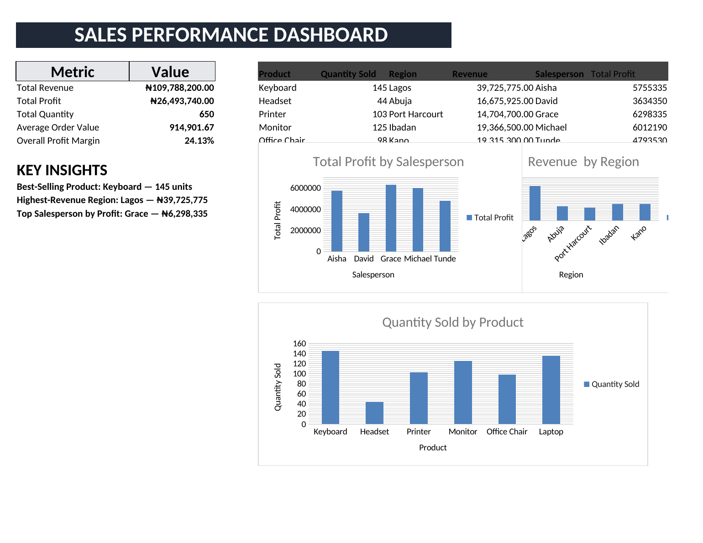

VIRTUAL ASSISTANT • PERSONAL ASSISTANT • DATA ANALYST
Helping busy people stay organized, productive & informed.
Hi, I'm Funmilayo Fakojo. I provide reliable administrative, virtual assistance and data support that helps individuals and businesses save time, stay organized and make better-informed decisions.
Funmilayo Fakojo
Virtual Assistant | Data Analyst
ABOUT ME
Professional support you can depend on.
I am a detail-oriented Virtual Assistant, Personal Assistant, and aspiring Data Analyst who helps individuals and businesses stay organized, productive, and informed. I provide reliable administrative support, including data entry, research, document management, scheduling, and digital organization.
I also have practical experience working with Excel and Google Sheets to organize, analyze, and present data in a clear and meaningful way. I enjoy turning raw information into useful insights that can support better decision-making.
My goal is to make work easier for my clients by combining strong administrative skills, attention to detail, organization, and practical data analysis.
MY SKILLS
What I bring to the table
Administrative Support.
Calendar management, scheduling, data entry, document organization, and day-to-day administrative support.
Email Management
Inbox organization, professional communication, email follow-up, and efficient handling of routine correspondence.
Data Analysis
Data cleaning, spreadsheet analysis, calculations, trend identification, and presenting findings in a clear and useful format.
Excel & Google Sheets
Formulas, data organization, sorting and filtering, reporting, dashboards, and spreadsheet-based analysis.
Research & Reporting
Online research, information gathering, data organization, report preparation, and presenting information clearly.
Customer & Social Media Support
Professional communication, customer support, social media assistance, and maintaining positive client interactions.
SERVICES
How I can help
Virtual Assistance
Reliable remote support for recurring administrative tasks, scheduling, communication and organization.
Personal Assistance
Scheduling, reminders, research, organization and personal task support to help you stay focused.
Data Analysis
Spreadsheet-based data cleaning, analysis, reporting and dashboard creation to turn raw data into useful insights.
Business Support
Help with documents, spreadsheets, research, communication and workflow organization.
PORTFOLIO
Sample projects
FEATURED DATA PROJECT
Sales Performance Dashboard
An Excel-based sales data analysis project designed to turn raw sales records into clear, business-focused insights. The project examines revenue, profit, quantity sold, regional performance and salesperson performance.

Dashboard preview — click the files below to explore the full analysis.
What I analyzed
- Revenue and profit performance
- Quantity sold and sales activity
- Regional performance
- Salesperson performance
Key Findings
- Compared revenue and profit performance across the sales data.
- Reviewed quantity sold to identify sales activity by product.
- Compared regional performance to understand differences in sales results.
- Evaluated salesperson performance and contribution to overall profit.
What this project demonstrates
Data organization, spreadsheet formulas, calculations, analysis, dashboard presentation and the ability to communicate findings in a clear format.
Data Analysis • Excel • Google Sheets • Dashboard • ReportingAdministrative Dashboard
A sample system for organizing tasks, deadlines and priorities to improve productivity and workflow visibility.
Organization • Productivity • AdministrationResearch & Reporting
A sample research workflow showing information collection, organization, analysis and structured reporting.
Research • Data • DocumentationSocial Media Calendar
A sample content-planning system for keeping social media activities organized and consistent.
Content • Planning • OrganizationCONTACT
Let's work together.
I'm open to Virtual Assistant, Personal Assistant, administrative support and entry-level Data Analysis opportunities.